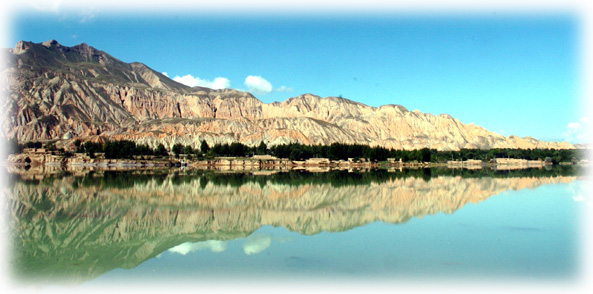
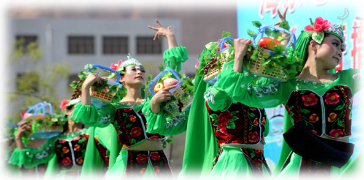
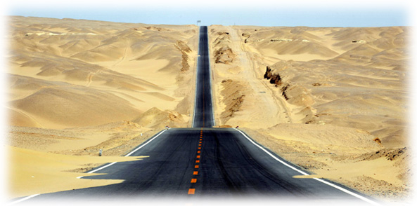
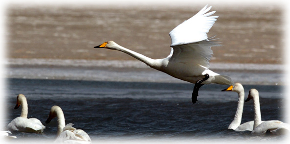

自然风光
（1）青海湖
青海湖又名“库库淖尔”，即蒙语“青色的海”之意。它位于青海省东北部的青海湖盆地内，既是中国最大的内陆湖泊，也是中国最大的咸水湖。由祁连山的大通山、日月山与青海南山之间的断层陷落形成。它长105公里，宽63公里，周长360公里，面积达4583平方公里，比中国最大的淡水湖鄱阳湖，要大近459.76平方公里。最深处达38米，湖泊的集水面积约29661平方公里，湖面海拔3196米。西北有布哈河注入。
青海湖地处青海高原的东北部，这里地域辽阔，草原广袤，河流众多，水草丰美，环境幽静。湖的四周被四座巍巍高山所环抱：北面是崇宏壮丽的大通山，东面是巍峨雄伟的日月山，南面是逶迤绵绵的青海南山，西面是峥嵘嵯峨的橡皮山。这四座大山海拔都在海拔3600米至5000米之间。举目环顾，犹如四幅高高的天然屏障，将青海湖紧紧环抱其中。从山下到湖畔，则是广袤平坦、苍茫无际的千里草原，而烟波浩淼、碧波连天的青海湖，就像是一盏巨大的翡翠玉盘平嵌在高山、草原之间，
构成了一幅山、湖、草原相映成趣的壮美风光和绮丽景色。
居住在这里的汉、藏、蒙古等各族人民和睦相处，共同保护、开发和建设这浩瀚的宝湖。青海湖的美景吸引着成千上万游人，成为国内外旅游者云集的游览胜地。为了开发正在兴起的高原旅游事业，青海旅游部门在青海湖建立了旅游点。游客到此不仅可以观赏高原牧区风光，还可以乘马骑牦牛，漫游草原，攀登沙丘，或到牧民家里访问，领略藏族牧民风情。牧场还专门为游客扎下各式帐篷，备有奶茶、酥油、炒面和青稞美酒供游客品尝。

（2）塔尔寺
塔尔寺位于青海省西宁市湟中县鲁沙尔镇西南隅的莲花山坳中，是我国藏传佛教格鲁派(俗称黄教)创始人宗喀巴大师的诞生地，是藏区黄教六大寺院之一， 也是青海省首屈一指的名胜古迹和全国重点文物保护单位。距省会西宁市26公里。
塔尔寺是青海省藏传佛教中的第一大寺院，原名塔儿寺，得名于寺中大金瓦殿内纪念宗喀巴的大金塔。塔尔寺自建立之日起，慢慢完善了一套自己的寺院宗教组织，寺院政治组织和寺院经济来源，文化生活等的体系化。其中最能体现塔尔寺各类组织完善的要算寺院庙会了。庙会既是僧侣的学经的好机会，又是他们娱乐的极佳时间。藏语称“衮本贤巴林”, 意为十万佛像弥勒洲。始建于公元1379年，距今已有600多年的历史,占地面积600余亩,寺院建筑分布于莲花山的一沟两面坡上,殿宇高低错落,交相辉映,气势壮观。位于寺中心的大金瓦殿,绿墙金瓦,灿烂辉煌,是该寺的主建筑,它与小金瓦殿(护法神殿),大经堂,弥勒殿,释迦殿,依诂殿,文殊菩萨殿,大拉让宫(吉祥宫),四大经院(显宗经院,密宗经院,医明经院,十轮经院)和酥油花院,跳神舞院,活佛府邸,如来八塔,菩提塔,过门塔,时轮塔,僧舍等建筑形成了错落有致,布局严谨,风格独特,集汉藏技术于一体的宏伟建筑群。殿内佛像造型生动优美,超然神圣。栩栩如生的酥油花,绚丽多彩的壁画和色彩绚烂的堆绣被誉为“塔尔寺艺术三绝”,寺内还珍藏了许多佛教典籍和历史,文学,哲学,医药,立法等方面的学术专著。每年举行的 佛事活动“四大法会”更是热闹非凡,游人如潮。
（3）坎布拉森林公园
坎布拉国家森林公园位于青海省黄南藏族自冶州尖扎县境内，距青海省西宁市131公里，距尖扎县城50公里。它景区面积152平方公里，平均海拔2500米，最高海拔3100米，最低海拔2300米，年平均气温为摄氏20℃，最低气温为摄氏-11℃，年均温度-6℃-2。9℃，坎布拉国家森林公园以奇特“丹霞”地貌、茂密的森林植被、古老的宗教文化、雄伟的电站大坝、绮丽的峡谷库区及独特的藏族风情所构成，集自然景观和人文景观于一身，是开展旅游、朝拜、观光、度假、野营和科学考察、生态旅游的理想胜地。
（4）金银滩草原
金银滩草原，位于青海省海晏县境内。西部与宝山和青海湖相临，北、东部是高山峻岭环绕，南部与海晏县三角城接壤（三角城是西海郡遗址，建于西汉王莽秉政时期），方圆1100平方公里，有麻皮河和哈利津河贯穿。 藏民兄弟世世代代生活在这块热土地上，有30多万支牛羊在这里生息，是典型的牧区。金银滩的黄金季节是7、8、9三个月，鲜花盛开，百鸟飞翔，尤其是百灵鸟儿的歌声，动听迷人。这里是一片碧草如茵的大草原。浮云般的羊群，棕黑相间的牦牛，星星点点地徜徉在青草和野花丛中。穿着藏服的藏民，骑着骏马悠然地在草原上缓缓而来。远处，山峦起伏，偶有雄鹰飞过的身影，莲花般的蒙古包散落在白云深处。 金银滩草原牧草肥美、牛羊肥壮，人们以金银遍地来形容这片美丽而富饶的土地，故得名“金银滩”。
在青海省海北藏族自治州海晏县境内，有一片广袤肥沃的大草原，藏族同胞们世世代代生活在这块热土上。这里很美，美得足以让心震颤；这里很高，高得让人感觉蓝天和白云触手可及。浮云般的羊群，棕黑相间的牦牛，星星点点地徜徉在青草和野花丛中。不时有穿着藏服的牧民们骑着骏马悠然地在草原上缓缓而行。远处，山峦起伏，偶有雄鹰飞过的身影，莲花般的蒙古包散落在白云深处……

（5）东关清真大寺
东关清真大寺始建于公元1380年左右的明洪武年间，在青海省内规模最大，历史悠久，与西北地区著名的西安化觉寺、兰州桥门寺、新疆喀什艾提卡尔清真寺并称为西北四大清真寺。据现存寺内的《重建西宁大寺碑记》（1914年5月立）和《重建西宁东关大寺碑记》（1948年8月立）两块碑文记载，可以看出这座大寺已经具有600多年的历史。它是一座融塔、墙、殿为一体的伊斯兰建筑，正中的礼拜大殿为全寺最大的建筑物,占地1102平方米。整个建筑式样别致，结构分明，每逢礼拜、三大宗教节日，数以万计的穆斯林汇集在此举行隆重的聚礼活动。东关清真大寺是伊斯兰经学研究的最高学府，在海内外享有盛誉。

|